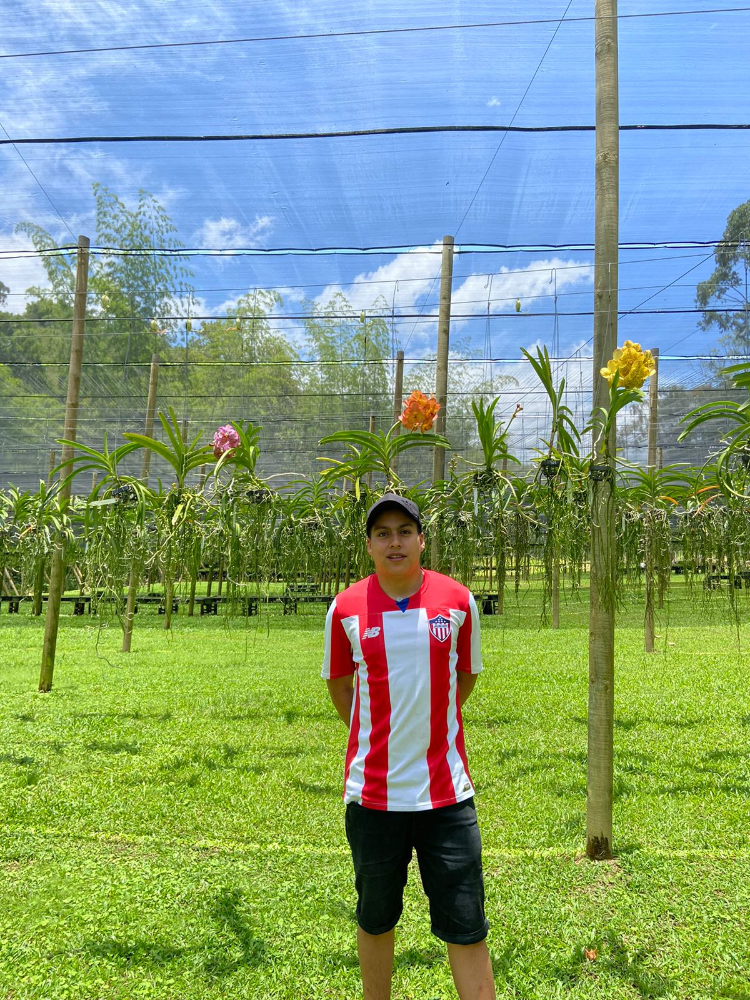

Estudiante de Tecnología en Desarrollo de Sistemas de Información, en el INSTITUTO UNIVERSITARIO DE ENVIGADO, cursando sexto semestre con enfoque en investigación de mercados, nuevas tecnologías y desarrollo de software con calidad, atendiendo los requerimientos exigidos por los usuarios de sistemas de información sea en ambientes locales o web, apoyado en diferentes plataformas. Con experiencia en servicio al cliente, logrando cumplir metas en capacitación, promoviendo el desarrollo de nuevas tecnologías con un enfoque social. Habilidades lógicas, pensamiento crítico, comprensión lectora y redacción, así como capacidades para el trabajo en equipo y adaptabilidad al cambio.
Juan David Martínez Mena

Email: jdmartinezm@correo.iue.edu.co
Github: juandmm12
Neocities: juandmm.neocities.org/